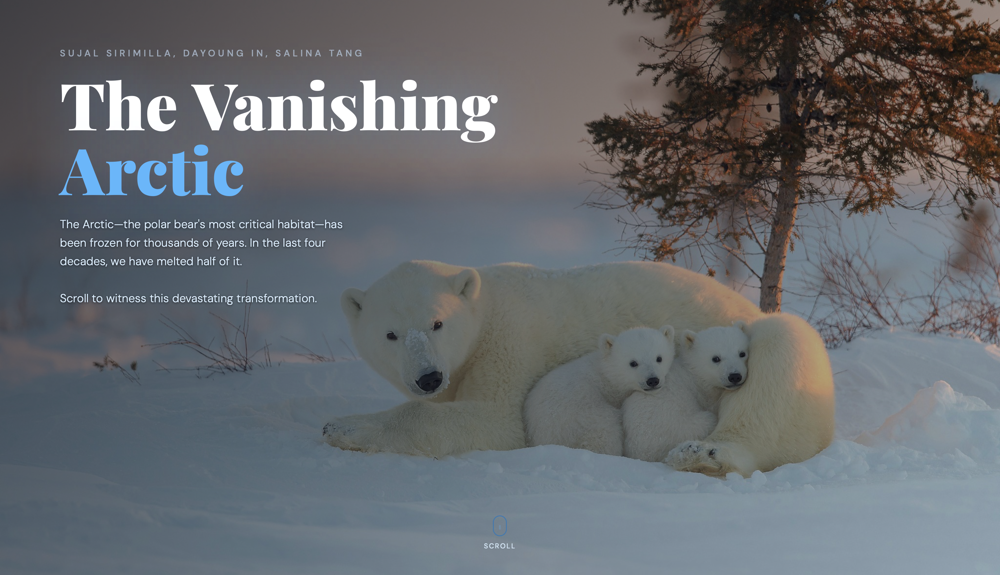

The Vanishing Arctic
Built an interactive scrollytelling data visualization exploring Arctic sea ice decline, climate change, and its impact on polar bear habitats.
The Vanishing Arctic
Built an interactive scrollytelling data visualization exploring Arctic sea ice decline, climate change, and its impact on polar bear habitats.
About Project
The Vanishing Arctic is an interactive scrollytelling experience that visualizes Arctic sea ice decline and its impact on polar bear habitats. Using climate datasets and D3.js, the project transforms complex environmental data into an engaging narrative experience.
Tech Stack
- D3.js
- JavaScript
- HTML
- CSS
- JSON
Key Contributions
- Designed an interactive scrollytelling experience.
- Built dynamic D3.js visualizations for climate storytelling.
- Integrated historical sea ice and temperature datasets.
- Visualized environmental change through narrative-driven interactions.
Categories
- Data Visualization
- Scrollytelling
- Climate Data
Year
2026